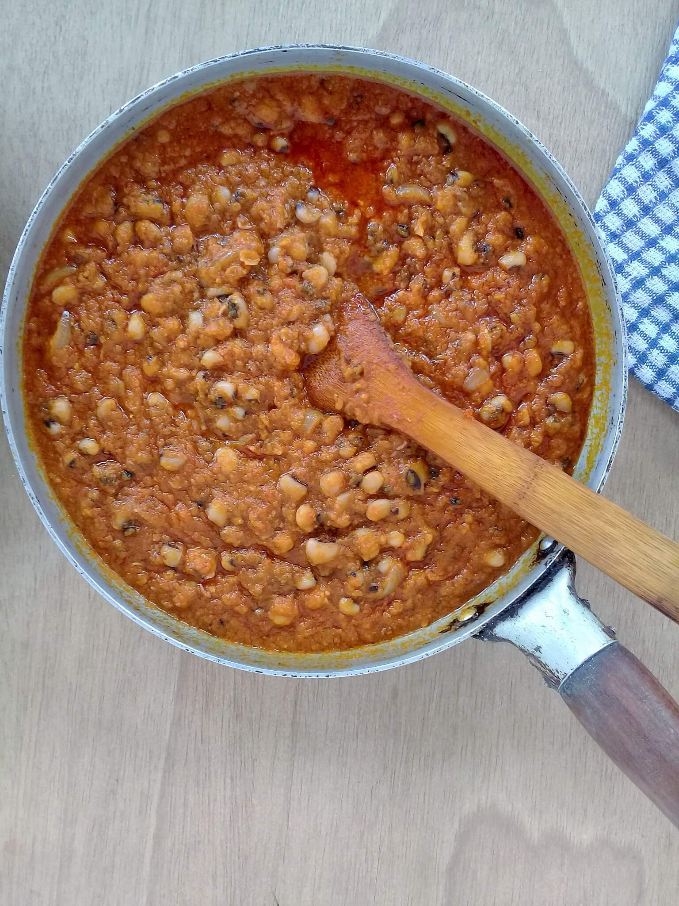

Ghanaian Beans Stew

Description
This origin of this dish can be found in West Africa, more specifically, in Ghana.
This savoury dish is prepared using a variety of spices and plant proteins such as beans. By incorporating rich flavours and textures, the dish ends up being complex yet balanced.
Ingredients
- 100g Tomato paste
- 500g Tomato puree(or tomato passata)
- Salt
- Chilli powder(add your preferred amount)
- 2 large onions
- 500g Black eyed peas(aka beans)
- Palm oil
Steps
- Select the beans to remove any undesirable beans if necessary.(If you have preselected beans, skip to the next step).
- Wash and boil the beans until soft but not mushy(or soak in water over night.) Do not throw away any left over water.
- Blend onions and salt together.
- Turn your stove/hob to medium heat and heat the palm oil in a pot.
- Add chilli powder and then immediately add the tomato paste. Stir continuously for 2-3 minutes, or until well combined.
- Pour the blended mixture and tomato puree into the pot.
- Stir contents of the pot for 5-10 minutes while checking salt and chilli powder levels. Add more of either or both if necessary.
- Add the beans to the pot and leave to simmer(medium low) for about 15 minutes, or until desired consistency is achieved